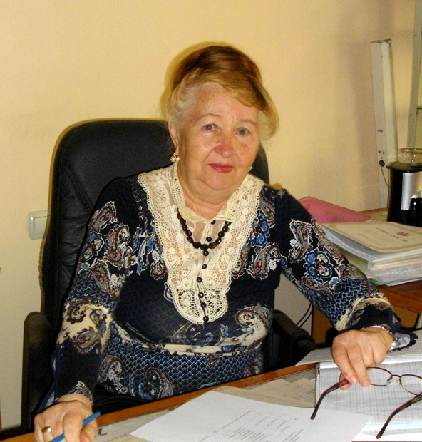

Ільчишина Наталя Миколаївна
ГОЛОВА ЦИКЛОВОЇ КОМІСІЇ
Викладач вищої категорії
Освіта:
Одеська національна академія харчових технологій (2005р.), інженер-технолог.
Викладає дисципліни: «Технологія кондитерського виробництва», «Технологічне обладнання галузі», «Процеси та апарати харчових виробництв».

Уманська Валентина Іванівна
ЗАСТУПНИК ДИРЕКТОРА З НАВЧАЛЬНО-МЕТОДИЧНОЇ РОБОТИ
Викладач-методист вищої категорії
Освіта:
Київський технологічний інститут харчової промисловості, інженер-технолог.
Викладає дисципліни: «Технологія кондитерського виробництва», «Технохімічний контроль галузі».